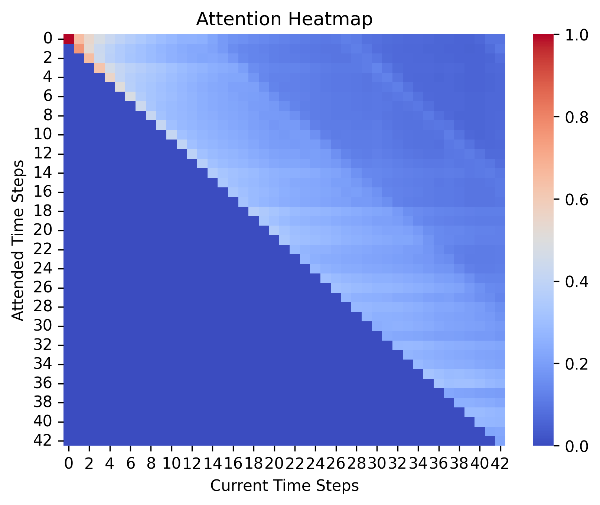

| Decoding Multi-Head Attention for Intra-Day Financial Time-Series Forecasting |
Final project for 6.7960, MIT, Fall 2024 |

| Decoding Multi-Head Attention for Intra-Day Financial Time-Series Forecasting |
Final project for 6.7960, MIT, Fall 2024 |
We address an autoregressive prediction problem in the context of intraday financial markets. The objective is to predict the sign of the return () for 30-minute intervals using a set of lagged input features. The task is framed as a three-class classification problem. To facilitate this, we construct a comprehensive set of technical indicators derived from historical data, including log returns, volatility, and trading volume, along with their lagged values. These features serve as the predictive inputs to the model. Below, we provide a schematic visualization of the input representation and the prediction task.
Below a visual representation of our model, where X, Y, Z are (T x 1) vectors, where T is our lookback period.
To implement our model, we adopted the GPT-2 architecture, tailored to the requirements of our autoregressive prediction task. Specifically, we initialized our model to accept input features shaped as , where B represents the batch size, T denotes the lookback period (, corresponding to three days of intraday data), and N specifies the number of feature dimensions (, including lagged values of volatility, log returns, and volume).
The input features were first processed through an embedding layer that projected the raw data into a higher-dimensional space, enabling the model to capture more intricate patterns in the data. To incorporate temporal information, a positional embedding layer was added to encode the sequential nature of the time series, ensuring that the model could differentiate between input tokens based on their relative positions.
The core of the network consists of three stacked self-attention blocks, adhering to the principles of the GPT-2 architecture. Each block includes:
In the final stage, the output of the self-attention blocks is passed through a decoding layer designed for classification. The decoder transforms the processed representations into predictions corresponding to one of the three target classes (), representing the sign of the return. This setup ensures that the model is well-suited for the autoregressive classification task, leveraging the strengths of the GPT-2 architecture for financial time series data.
Below the visualization of the initialized model:

Network Analysis
Having defined the model we aim to train, the next step involves delving into its inner workings to make the model more interpretable and human-comprehensible. Our approach draws inspiration from the work of Wang et al. (2022), which introduces a mechanistic framework for understanding neural networks. One of the key concepts proposed is the hookpoint. A hookpoint is a custom pytorch nn.Module that operates as a passthrough immediately after every activation function in the model, returning the identity of the data it processes, implementing either forward or backward hooks. These hooks are instrumental in caching and analyzing the activations at various points in the model, particularly within attention layers, as well as conducting ablation studies.
In our experiments, we leverage hooks to silence the outputs of attention heads selectively, aiming to identify which heads most significantly influence the model's predictions. This process employs a technique called mean ablation, where the output of a single head is replaced with its mean value. By iteratively deactivating different attention heads and observing changes in the loss, we can quantify the relative importance of each head. The comparison between loss variations enables us to rank heads in terms of their contribution to the prediction process.
After identifying the most influential heads, we analyze their outputs to determine the temporal dependencies the model emphasizes. This allows us to uncover which time steps the model focuses on most heavily during its predictions. Such insights not only improve our understanding of the model's decision-making process but also provide a pathway to refine its interpretability and trustworthiness.
We structured our implementation by dividing the process into four key steps: 1) Data Collection & Preparation; 3) Model Training; and 4) Network Analysis.
In the initial phase, we sourced financial data from Polygon.io by developing a bespoke API. This enabled us to retrieve comprehensive information on all U.S. stocks with 30-minute interval data spanning over five years. The high-resolution dataset provides a robust foundation for subsequent analysis and modeling.
Following data extraction, we implemented a series of rigorous data cleaning procedures to address potential issues that could adversely affect model training in subsequent phases. These procedures included the removal of missing values and duplicate entries, as well as the handling of outliers. Missing values were systematically addressed using interpolation techniques, while duplicates were eliminated to maintain dataset integrity. Subsequently, we enriched the dataset by constructing additional features derived from the securities' price movements. Feature engineering focused on key financial metrics such as logarithmic returns, rolling volatilities, and price-volume relationships. These features were selected due to their relevance in capturing temporal and cross-sectional patterns in the data. While the scope of feature engineering was constrained by time limitations, the chosen features provided a robust foundation for predictive modeling. In preparing the dataset for model training, we structured the data into a format suitable for time-series classification tasks. Specifically, each sample in the training dataset was designed as an entry with the shape (T, d ), where T represents the temporal dimension and d denotes the number of features engineered. This configuration ensured that the model could effectively leverage both the temporal dynamics and the feature relationships present in the data. Finally, the dataset was partitioned into training and testing subsets to facilitate model evaluation. The temporal structure of the data was preserved during splitting to ensure that the test set consisted of future data relative to the training set, thereby maintaining the chronological integrity necessary for time-series analysis. This division established the foundation for model training and validation in subsequent stages.
With the data preprocessed and prepared, we initialized our model based on the architecture outlined above, aiming to elucidate the focus of transformers in a time-series scenario such as the one described. Training was conducted on two distinct models, differing only in that the second model featured an increased dimensionality of weight parameters and an additional attention head (instead of 4). This adjustment was
intended to enhance the model's predictive capacity and yield more insightful results. Both models were trained on the MIT High-Performance Computing Cluster, iterating over the training dataset for 20 epochs with a learning rate of 1 x 10-4.
For the network analysis phase, we employed a mean ablation technique to investigate the contributions of individual attention heads within the transformer architecture. By selectively silencing the output of specific heads, we measured the percentage increase in loss to quantify their importance to the model's predictions. This approach allowed us to identify which heads were most critical for the model's performance, offering valuable insights into how the transformer processes time-series data.
We train two variants of the Time Series GPT2-mini model, one with model dimensions of 20 and a 5 dimensional subspace per attention head with 4 attention heads per layer (“small” model), and the other having model dimensionality of 50 (we project each 5-dimensional input token of the input sequence onto a 50-dimensional latent space before initiating the series of Attention layers) and 5 attention heads per layer (“large” model), both of which with a total of 3 attention layers. After training, we carry out the mean ablation studies for each model independently as described above and analyze the head importance defined as the percentage decrease in accuracy when mean ablating each specific head with respect to the baseline model accuracy on a test set. Once we identify the most relevant attention heads that the learned model hinges upon the most for making its predictions we proceed in analyzing the patterns described by such heads via their attention activations on the test set. Below we report, in turn, the two main categories of heads we are able to detect with our ablation + attention activation study across the different layers of the model. Overall we find, among all heads across the three layers of both networks, that there exist two attention heads that carry the most influence in terms of generating accurate predictions, the first being in the first layer and the second in the third layer of both models. In both models, the relevant head sitting in the first layer of the network consistently focuses, at each time step, on the tokens corresponding to the same time of the day in the previous days, thus paying attention to the time-consistent patterns that repeat across days at regular times. We deem such head the “Time Persistence Head”, capturing a longer-term time-stationary behavior of our series. The second relevant head, located in the third and final attention layer of both the smaller and the larger networks, instead focuses on the most recent past observations at each time step, thus elaborating more short-term intra-day dynamics. We define such head as an “Intra-Day Dynamics Head”.
The Time Persistence Head is represented by the fourth head and by the second head in the larger and smaller GPT models respectively, both situated in the first layer of the network. As we can see from figure 1 (larger model) and 4 (smaller model), and especially for the larger model’s head, the attention weights are strongly biased towards a regular pattern that attends to the tokens situated at exactly 14 steps prior to the current token which, in our case of a trading day of 7 hours and thus 14 30min-interval time steps corresponds to an observation realized at exactly the same time of the day in the previous day/s. As the token reaches the end of the sequence, and thus observations for the same time become available not just for the previous day but also for two days prior, we see that the head progressively attends backward in time, always at 14-time steps increments. This indicates that the first high-level feature captured by the model as our sequence enters the network is one that relates to recurring patterns at the same time of the day across trading days, i.e., information that relates to a longer-term possibly mean reverting or trend following behavior of our sequence across days. This is overall one of the strongest structural pattern identified in both networks, which can be seen by the dynamic visualization gif 1 of the top 10 attended tokens for each token in our sequence in the animation below.
Despite the strength of this attention pattern, however, we saw that for the smaller model this systematic backtracking behavior was hard to achieve, arguably due to the lower dimensional subspace onto which attention operations are carried out by each head, which made it hard to dynamically identify the relevant time steps for each token position, let alone extract information from observations too-far distanced in the past. We therefore see another function emerging in the Time Persistence Head of the smaller model, which is identifying and paying attention to the end-of-day tokens for each time step, irrespectively of where the query time step is located relative to the end-of-day token 3. In essence, finding and attending to the end-of-day token helps to pin down the absolute time position of each token in the given day, thus playing a similar role of the dynamic Time Persistence Head in capturing repeating behaviors through days at the same time of the day. Given the lower model dimensionality of the smaller network, we find that this end-of-day anchoring gif 2 is extremely useful for predictions, as we find it present in many other attention heads and layers beside the Time Persistence Head of the first layer 4. As this rather strong pattern almost completely disappears in the second, larger model, we attribute this function as one that makes up for the model expressivity and dimensionality needed to capture the time persistent behavior that we find in 1.

The Intra-Day Dynamics Head instead tightly focuses on the past observations closest in time to the current token, thus at all times paying attention to the intra-day behavior of our series. This structure is consistent from the smaller 5 to the larger model 6, even though the attention pattern of the head in the larger model more strongly focuses on intra-day observations while excluding the end-of-day time steps. This is associated to a more effective behavior of this head since excluding the end-of-day observations, which in the majority of cases correspond to zero returns due to absence of trading (and thus not meaningful information), helps the head focus on more meaningful information unveiled throughout the other time steps of the day. By contrast, the smaller model’s head doesn’t show this behavior and thus uniformly attends to end-of-day observations as well including them in the intra-day dynamics. Both models’ heads show a scheme of progressively decreasing attention weights as the time steps get further back in time relative to the current query token, thus corroborating the hypothesis that such heads are focusing on the latest dynamics with potentially decaying impact in time gif 3.

This study overall investigates and sheds light on the behavior of multi-head attention in a Transformer Decoder model applied to a time-series setting. In addition, our empirical results present information on the role of dimensionality of the vector subspace onto which we project our input tokens and apply attention operations for each head. Through our mean ablation experiments on the activation of each attention head in each layer of our models we identified two main classes of heads dominating both the smaller and the larger of the trained models. These are a Time Persistence Head, focusing on the same times of the day in previous days and thus capturing longer-term dynamics of our sequence, and an Intra-Day Dynamics Head, focusing on the more recent time observations available at any given point in time and thus providing information on short-term dynamics of our sequence. They are respectively located in the first and third layer of our networks, suggesting, in line and analogy with the interpretation of depth in computer vision models, that earlier layers (and heads) focus on the extraction of higher-level features while later layers in the network refine the representation of each input in its detail, which in our time series setting turn out to be intra-day details or information. These results are significant in that, to our knowledge, no previous study analyzed the behavior of multi-head self-attention mechanics on high-frequency time series settings, and they thus inform us on the information processing capabilities of the attention technology also on the time series domain, with a particular importance of attention head specialization paving the way for more interpretability studies. The second important finding is the relevance of the dimensionality of the latent space onto which attention operations are carried out, with a higher dimensionality crucially extending the model’s expressivity and its ability to capture more detailed and potentially dynamically changing patterns. This is represented by the two patterns highlighted above being significantly strengthened when the trained model goes from a dimensionality of 5 to one of 10 for the key, query, and value vectors.
Further studies could interestingly focus on investigating the role of other modules of the transformer architecture, most notably pointwise MLPs, which in NLP domains have been shown to encode the majority of the knowledge stored and retrieved by Large Language Models during inference. In addition looking at the impact of network might also be interesting, as new patterns might arise as the complexity of model scales. It would thus be interesting to understand which analogies might be present in the time series setting.
[3]Montesinos, D. M. (2020). Modern methods of text generation. National Research University Higher School of Economics, Moscow, Russia.